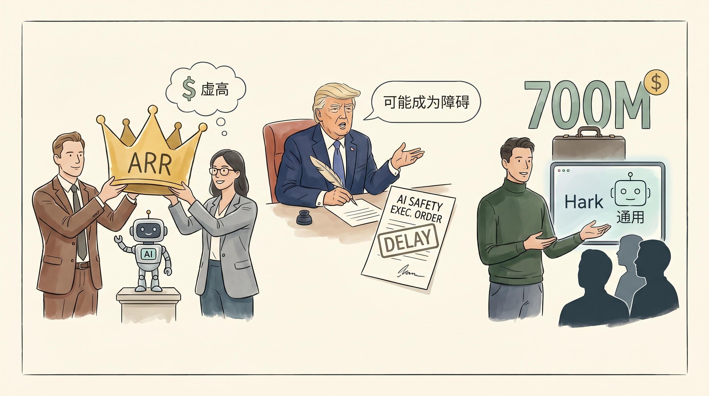

How VCs and founders use inflated ‘ARR’ to crown AI startups
两克伴AIGC日报
2026-05-24 星期日

本期关注：**风险投资人和创始人如何利用虚高的“ARR”为AI创业公司加冕**、特朗普推迟人工智能安全行政令，称相关措辞“可能成为障碍”、Hark为其神秘的“通用”AI界面获得7亿美元A轮融资、无需GPU即可在PC上直接运行Chrome的小型Gemma4（又称Gemini Nano）
📰 行业动态
Trump delays AI security executive order, saying language ‘could have been a blocker’
Hark raises $700M Series A for its secretive ‘universal’ AI interface
🔥 今日焦点
Gemini Nano，也就是被重新命名为 Gemma4 的那个 Chrome 内置小模型，现在可以直接在你的普通 PC 上运行了，而且完全不需要 GPU。这个消息最让人惊讶的地方在于——它不是通过什么复杂的优化手段实现的，而是直接就能跑。这说明端侧 AI 的门槛正在快速降低，以前需要专业硬件才能做的事情，现在一台普通电脑就能搞定。对于开发者来说，这意味着本地调试和测试变得更加便捷；对于普通用户而言，也意味着个人隐私数据不需要上传到云端就能体验 AI 能力。当然，作为一个小参数量的模型，它的能力边界还是很明显的，但这不影响它成为本地开发测试的有力工具。
---
llama.cpp 的 server 功能现在内置了原生工具支持，包括 exec_shell（执行命令行）和 edit_file（编辑文件）等。这意味着开源社区在让本地模型具备"动手能力"这件事上又迈进了一步。不再需要依赖复杂的外部框架或者额外的 API 配置，一个本地服务器就能让模型直接和你的文件系统、终端交互。对于那些关注本地 AI 开发和隐私的人来说，这个更新值得关注——它让"让模型帮你做事"这件事变得更简单、更可控。当然，受限于本地模型的推理能力，实际效果可能还比不上云端大厂的产品，但它代表了一个重要的技术方向。
📚 深度长文
在企业级大模型应用中，仅靠语言模型的内部记忆往往不足以提供准确、实时的业务答案。针对这一痛点，RAG（检索增强生成）与Agent（自主代理）两种技术路径被提出，并分别聚焦不同的问题维度。本文核心观点指出，RAG 通过外部知识库检索，将最新、最可信的文档片段注入生成过程，从而显著降低幻觉风险并提升答案的可溯源性；而 Agent 则以目标驱动的规划、工具调用和状态反馈循环，实现跨系统、跨任务的自动化决策，适用于需要多步推理和实时交互的复杂场景。作者进一步从实现难度、延迟、成本和数据治理四个维度对二者进行对比，强调并非二选一的竞争关系，而是可以组合使用的互补方案——RAG 负责信息检索的准确性，Agent 负责任务执行的连贯性与自适应性。阅读本文的价值在于：首先，帮助 AI 开发者厘清何时优先采用检索、何时引入 Agent；其次，提供在实际项目中落地的选型框架和风险评估方法；最后，启发在企业数据安全与模型可解释性之间的平衡思路。无论是构建智能客服、数据分析助手，还是研发自动化工作流，都能从中获得实用的技术洞察与实战经验。
---
这篇文章以“AI正在吞噬自身”为核心论点，揭示了当前AI产业变革的本质。作者指出，AI行业正经历一场深刻的自我颠覆——技术迭代速度远超商业落地，导致大量资源错配与泡沫累积。这种“吞噬”并非消极的消亡，而是行业在淘汰落后产能、重构价值链过程中的必经阵痛。
文章引入德国古典哲学的辩证思维，提出真正的大机遇往往藏在逆向思考中。当市场普遍追逐热点时，理性者应关注被忽视的底层基础设施与长尾应用场景；当资本疯狂涌入表层应用时，真正的价值洼地可能正在基础层悄然形成。
🐦 Ta们说
> "Geoffrey Moore says startups die in the chasm because pragmatist buyers demand a "whole product." These folks won't tolerate gaps. They need references. They need the complete solution. The chasm is lethal because because the buyers won't buy without perfection.
But Moore's model assumes there's an EXISTING solution the buyer is comparing you to. The whole framework assumes the buyer has a status quo they're comfortable with.
> "A 6-person team is building task-specific AI models that are 4-8x faster than anything from OpenAI or Anthropic. 500K downloads on HuggingFace. No hype. Just better engineering winning on the merits.
This is what "make something people want" looks like in the model layer.
> "Everyone thinks "do things that don't scale" is about building relationships with early users.
Yes AND it's about generating mistakes at maximum density.
🛠️ 产品推荐
Claw-Coder是一款本地运行的AI编程助手，集成了检索增强生成（RAG）技术和知识图谱能力。它直接在用户设备上运行，无需依赖云端大语言模型，确保代码和项目数据始终保留在本地环境。
该产品的核心价值在于解决隐私和安全痛点。传统云端AI编程工具在提供便利的同时，要求用户将代码库上传至第三方服务器，这不仅存在数据泄露风险，还可能导致知识产权问题。Claw-Coder通过本地部署模式，让开发者既能享受AI辅助编程的高效体验，又无需担忧代码安全。
这是一款专为2026世界杯打造的轻量级预测竞猜平台，由开发者在Cursor工具测试期间快速搭建。平台的核心目标是让家人和朋友能够便捷地参与世界杯预测活动，尤其考虑到了老年用户的使用体验。
核心功能包括：